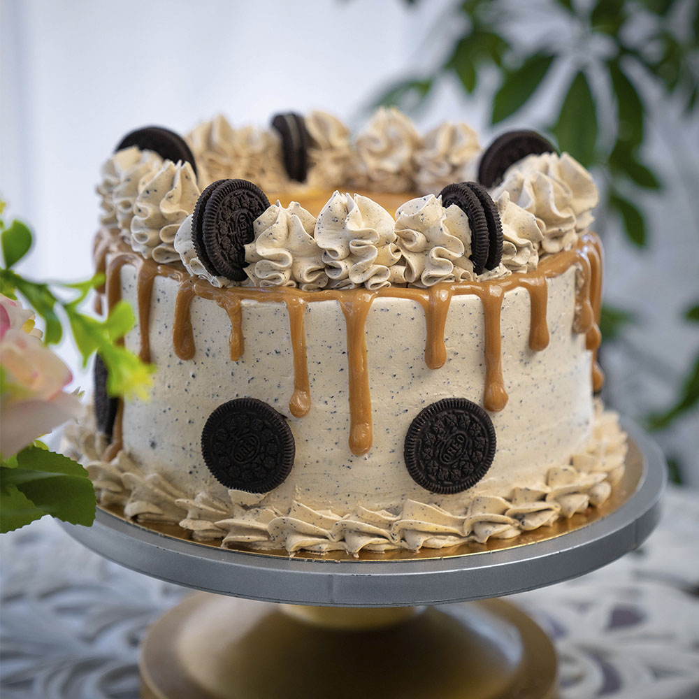
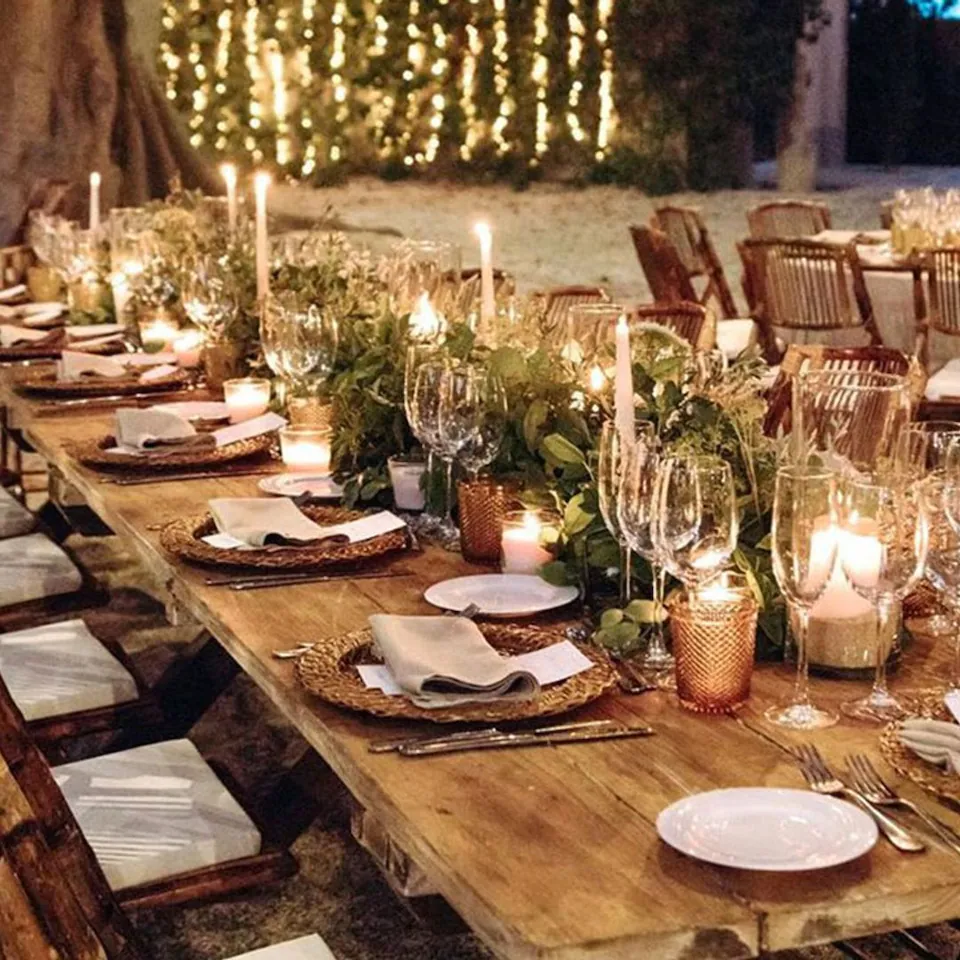

Tortas Personalizadas
Diseñadas a tu gusto para cumpleaños, bodas o cualquier evento especial.
En Sweet Kitty Bakery no solo vendemos postres: brindamos experiencias dulces. Ofrecemos una variedad de servicios personalizados para cada ocasión.

Diseñadas a tu gusto para cumpleaños, bodas o cualquier evento especial.

Mesas temáticas y postres decorados para eventos inolvidables.
Llevamos tus pedidos directamente a tu hogar, frescos y con todo el amor.